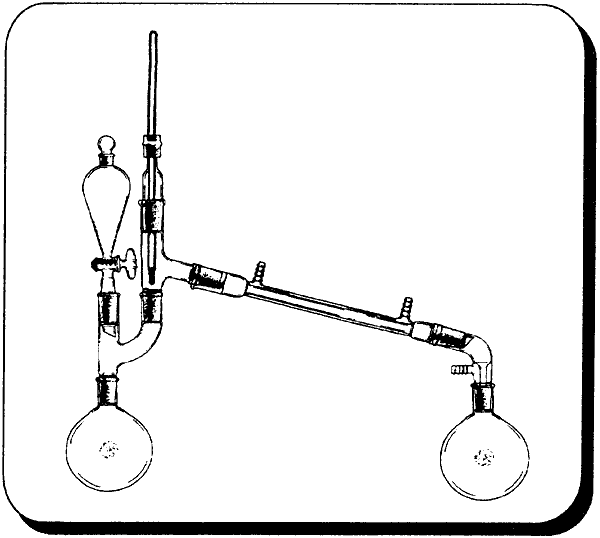
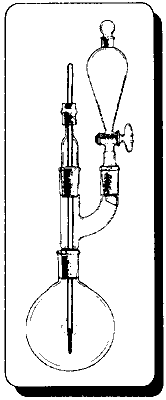
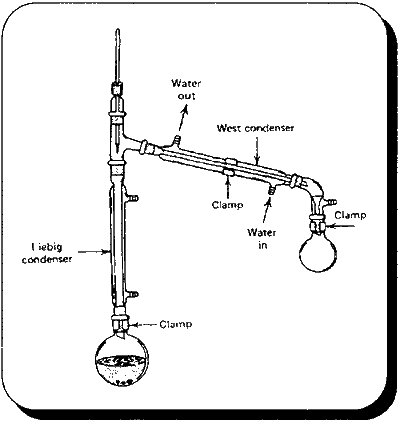

|
Alkyl halides in chemistry are powerful tools as intermediates and as end products in varied chemical industries. For our purpose in this book, we will consider them for intermediates in the formation of amines and in the case of the allyl halides for the synthesis of safrole. The name Alkyl is just generic for a carbon chain and Halide is generic for any one of the four halogens: Fluorine (F), Chlorine (Cl), Bromine (Br), and Iodine (I). The halide derivatives of safrole will be discussed in the chapter on Safrole. There are several choices of functional groups to form alkyl halides from. The ones that will be encountered in this book are ethers, alkenes, and most importantly here and elsewhere --alcohols. We will use alcohols for the lower alkyl halides discussed in this chapter since they are the most practical and readily available materials. MechanismThe two general reagents that will be discussed for transforming alcohol groups to halides are: Phosphorus halides and Hydrogen halides, Hydrogen halides are just the corresponding acid of each halide such as hydrochloric acid or hydrobromic acid. The acids can be purchased as such or be generated in the reaction mixture from halide salts, ice. sodium bromide or potassium bromide, and another acid. The acids replace the alcoholic -OH by first protonating the group. OH is a very poor leaving group but H20 is a very good leaving group and the Bromine ion, acting as the nucleophile, replaces the H20. There are two ways in which the bromine replaces the H2O. First is that the H2O leaves first, leaving behind a positive charge on the carbon and the second is that the bromine directly displaces the H20 as illustrated in figure 4.1. These are examples of SI and Sn2 substitution, respectively. Which route is taken depends mainly on the number of other carbons the affected carbon is bonded to. Tertiary carbons (bonded to three other carbons) undergo Sn l substitution. Primary (bonded to one other carbon) and methyl groups (single carbons) undergo Sn2 substitution. Secondary carbons (bonded to two other carbons) can go either way, only experimentation will tell. Depending on which substitution occurs, reaction conditions can be altered to increase the rate and yield. These conditions and why are discussed in any Organic Chemistry text from the local college bookstore. Check it out! The Phosphorus halides have good yields for primary and secondary alcohols, but next to nil for tertiary. Their mechanism is somewhat similar to the acids in that a good leaving group is formed first and then is displaced with an Sn2 attack. Halide Salts As ReagentsThe preparation of three alkyl halides will be discussed here (methyl, ethyl, and allyl). Of these, the iodides and bromides will be produced using the appropriate salts. The alcohols, methanol & ethanol, that will be used as starting materials can be easily obtained at the local hardware store in the section containing paint thinners, etc. The alcohols are also known by many common names which one should be familiar with: Methanol = methyl alcohol, wood alcohol Ethanol = ethyl alcohol, grain alcohol A simple preparation for allyl alcohol is given in the miscellaneous chemicals chapter. The salts, sodium iodide, sodium bromide, potassium iodide, or potassium bromide, would have to be purchased from a chemical supplier. These salts are relatively common and are available in bulk from industrial chemical supply houses as is sulfuric and phosphoric acid. Halide Salts With Sulfuric AcidThe procedure below was originally written for Ethyl bromide, but is easily modified for the corresponding Methyl arid Allyl halides. Ethyl bromideAlfred E. Holt published a paper in 1916 in the Journal of the Chemical Society for the best preparation of ethyl bromide from his practical experience. In a 5 L flask, 300ml of water are added to 500ml (920g, 9.0 moles) of concentrated (96%) sulfuric acid. After cooling, 500ml (395g) of absolute alcohol are run in (or 429g of 190 proof). Leave the flask in an ice bath to prevent the temperature from rising too much, When cold, slowly add 380g of potassium bromide to the solution. Be sure to keep the solution cold to prevent the evolution of HBr gas. Place the flask in a simple distillation set up and gently heat on a water bath at the lowest temperature that the ethyl bromide will distill over (slowly i.e. 2-3 hrs; pure ethyl bromide distills at 38.4 C). The ethyl bromide is collected in cool water and washed by repeated shakings with water then dried with calcium chloride ( it's dry when the calcium chloride no longer cakes up). Holt reports that yields as high as 96% have been achieved and rarely fall below 90%. Those that did were attributed to temperature irregularity during distillation. The dilution of the sulfuric acid is necessary to prevent the formation of diethyl ether to any great degree (see ether synthesis in miscellaneous chemicals chapter). If 93% sulfuric acid is used, add 270ml H2O and 518ml (959.5g, 9.0 moles) of sulfuric acid. The large excess of ethanol is used to achieve the highest yield of product based on the bromide salt. In other words, the ethanol is cheap but the bromide salts are expensive and can't be wasted. The following table lists the information needed to substitute potassium bromide with sodium bromide. Substituting the bromide salt for the iodide will not work well here for producing the corresponding iodide since sulfuric acid easily oxidizes the hydrogen iodide as is produced, yielding SO, and free iodine (1,). Substituting methanol for ethanol yields the corresponding methyl halide. All other chemicals retain their proportion. Physical constants and other data are included for comparison and any calculations one would want to do.
Methyl bromideProducing methyl bromide requires some special treatment due to the fact that it boils well below room temperature. The collection flask would have to be cooled well below zero with an acetone/dry ice bath. A regular ice bath would not be cool enough to condense all of the product quickly enough or prevent rapid evaporation. The washing water would have to have some salt added and be cooled in the bath also. The salt keeps the water from freezing and the cooling keeps the bromide from boiling away. Once the product is washed it should be dissolved in alcohol and placed in the freezer. This would be more cost effective than methyl iodide for methylating MDA, but worrisome for making methylamine since there are better methods for its production. Allyl bromideIn the case of allyl alcohol where the alcohol is prepared by the chemist, the great excess of alcohol in the preceding procedure and the savings of halide salts may not be justified. By using a mole ratio where the halides are in excess would save on having to recover unreacted allyl alcohol at the expense of using about 50% more halide salt. In a 2000m! beaker add 602g of concentrated sulfuric acid to 495.9 water (always add acid to water, not water to acid). Cool solution in an ice bath and add 607g (5.9 moles) of sodium bromide (or 702g potassium bromide) with stirring. Keep the solution cool and stir for a few minutes. Filter off any solid material. Pour solution into a 3000m1 boiling flask and place in the following apparatus. Add 324g of 72% allyl alcohol to the flask. Then slowly add 300g of concentrated sulfuric acid through the separatory funnel with stirring from a magnetic stirrer. The allyl bromide will completely distill over in about 1 hour (add your sulfuric acid at approximately this rate). Wash the crude bromide with dilute sodium carbonate solution, dry with calcium chloride (dry when no more calcium chloride clumps together), filter out calcium chloride, and then redistill. The product boils from 69-72 degrees C. Yield 92-96%. For 93% commercial sulfuric acid use 622g sulfuric acid and 477 g water. Use 310g of 93% in the separatory funnel. Iodide Salts With Phosphoric Acid(Herman Stone and Harold Shechter, A new method for the preparation of organic iodides, Journal of Organic Chemistry, 1950, vol. 15, pg 491-495) Phosphoric Acid has been used with the iodides to generate HI (as opposed to using sulfuric acid) in the preparation of alkyl iodides from ethers and alcohols. 95% phosphoric acid gave better yields than 85% phosphoric acid, but the 85% yields were still good. If for some reason ethers are more available, the preceding reference can be examined. Only the use of alcohols are described here. Consult the original reference for the 95% procedure keeping in mind that phosphoric anhydride is P2O5, phosphorus pentoxide. 2 moles of H3PO4 are formed for every 3 moles H2O and 1 mole P205. From AlcoholsThe general procedure is basically a mole ratio for the alcohol, iodide salt, and phosphoric acid (85%) of 1 : 2 : 2.1, respectively. Then refluxing and purification. For ethyl iodide; To 142.5 ml ( 242 g, 2.1 mole) of 85% phosphoric acid add 332g (2 moles) of potassium iodide being sure to keep the mixture cool to avoid evolution of Hydrogen iodide. Then add 58.3 ml (46g, 1 mole) of ethanol. Reflux for 6 hours. (use of a stirrer would aid the reaction) The mixture will separate into two layers during the reaction. The mixture is cooled and 150 ml of water is added followed by extracting the mixture with 250 ml of diethyl ether. The ether layer is separated and decolorized with a sodium thiosulfate solution (25g in 100 ml, use only as much as needed). This removes any iodine that is formed during the reaction. It is then washed with a saturated sodium chloride solution (as much table salt as you can dissolve in water). The ether solution is then distilled on a water bath with ether coming over first at approximately 35 C and then the ethyl iodide at 72.3°C (collect each separately). For sodium iodide use 300g in place of potassium iodide. For allyl iodide use 80.7g of 72% (1 mole) allyl alcohol in place of ethanol. All other proportions remain. For methyl iodide use 40.5 ml (32 g, 1 mole) of methanol. All other proportions remain the same. Since ethyl ether has a boiling point so close to that of methyl iodide do not extract with this solvent. Instead separate the layers with a separatory funnel and continue with the procedure. The chemist would only have methyl iodide to distill from any impurities. Phosphorus Halides as ReagentsOrganic Syntheses Collective Vols. contain great methods for preparing halide derivatives. In vol. l, pg 399-403, is given a synthesis for methyl iodide using phosphorus triiodide which is generated in the reaction mixture with iodine, red phosphorus, and white phosphorus. They give the best directions and should be referred to. Keep in mind that white phosphorus, aka yellow phosphorus, burns in moist air at approximately 30 degrees C and at slightly higher temperatures in dry air. Phosphorus tribromideOrganic Syntheses Collective Vol. II, page 358, gives a procedure for the production of isobutyl bromide using the alcohol and phosphorus tribromide. This procedure can be easily modified for ethyl and allyl bromide. Phosphorus tribromide decomposes in water so absolute (anhydrous) alcohols are use to avoid wasting this reagent. Ethyl bromideIn a 2L flask is placed 322g (407.6m1, 7 moles) of absolute ethyl alcohol. Cool the alcohol in an ice-salt bath to -10 degrees C an place in the following apparatus. Slip a gym clip over the claisen adapter joint to break the seal between it and the thermometer adapter. This prevents having a closed system. 695g (244ml, 2.56 moles) of phosphorus tribromide is placed in the separatory funnel and added slowly to the cooled alcohol without allowing the temperature rise above 0 degrees C (about 4 hours). When the addition is complete the ice bath is removed and stirring continued until it reaches room temperature. Allow to stand overnight. Place the flask in a fractional distillation set-up (30 cm column). Distill under mildly reduced pressure. The ethyl bromide will be first to come over. Place ice in the collection flask to help condense the ethyl bromide. Separate the ethyl bromide from the water/ice and redistill in a simple distillation apparatus. The chemist can substitute allyl alcohol (100%, 420g) in this procedure to obtain allyl bromide. High yields can be expected with this procedure. Halogen Acids as ReagentsConcentrated aqueous acids can be used to generate alkyl halides. This is generally the same as using the halides salts, but with the salts the halogen acid is generated in the reaction mixture. Hydrochloric acidHydrochloric acid reacts so slowly with alcohols it is generally impractical for producing chlorides. With lower alcohols (short carbon chain) it can be helped by the Lewis acid, ZnCl2 (zinc chloride), to give reasonable yields. Ethyl ChlorideAtherton M. Whaley and J. E. Copenhaver Preparation of Some Lower Alkyl Chlorides... , Journal of the American Chemical Society, vol. 60, pg 2497-8, 1938 Cool 117g Hydrochloric acid, 31.25% muriatic acid, (1 mole) in a 500m1 or larger boiling flask with an ice bath. Add to this 136.4g (1 mole) of Zinc Chloride and stir to dissolve completely. To this solution add 25g (.5 mole) of 95% (190 proof) ethyl alcohol. Place in the following apparatus and heat in an oil bath. Maintain the oil bath temperature at -P125 degrees C. Maintain water flow in the up right condenser so that the thermometer doesn't read over room temperature. Ethyl chloride boils at 12.3 C so place ice in the collection flask to help it to condense along with an external ice bath so ice can be added.. When the production of chloride ceases (30-60 min) stop heating, remove collection flask, and separate the layers with a separatory funnel that has been chilled in the freezer. Use directly. Expect yields of at least 70%+. Hydrobromic acidConstant boiling 48% hydrobromic acid is the commonly available strength for this acid. Constant boiling generally means that it can't be concentrated further by distillation. This along with sulfuric acid to speed things along can be used analogously to the halide salt method to generate alkyl bromides. Following are procedures from Organic Syntheses collective vol. I. Ethyl bromideTo 1037g (6.15 moles) of 48% Hydrobromic acid and 300g (162m1) of concentrated sulfuric acid in a 3000ml flask is added 250g (311m1, 5 moles) of 95% (190 proof) ethyl alcohol. This alcohol is added through the top of the claisen adapter where the separatory funnel is located (see following apparatus). Place ice in collection flask to help condense the ethyl bromide. 500g (272m1) of concentrated sulfuric acid is added to the separatory funnel and fed at a moderate drip into the flask. The flask is gently heated, if necessary, with a water bath to slowly distill over the ethyl bromide as it forms. (Bp. 38.5-39.5) When no more ethyl bromide distills over, stop the reaction, wash bromide with an equal volume of water, and then sodium bicarbonate solution. Redistill using an ice water bath around the collection flask instead of ice in flask. Stopper and store in a cool place. (yield ~90-95%) Allyl bromideIn a 300 L round bottom flask, add 1 Ing (5.9 moles) of 48% hydrobromic acid and 300g of concentrated sulfuric acid. To this is added 323g of 72% allyl alcohol (3.9 moles). Place in the same apparatus as above. Use a magnetic stirrer. 300g of concentrated sulfuric acid is placed in the separatory funnel and added gradually. The allyl bromide distills over in about 1 hr. Wash the crude bromide with dilute sodium carbonate solution and dry with calcium chloride (dry when calcium chloride no longer clumps together) and redistill. The product distills from 69-72°C. Yield 92-96%. Hydrogen iodideThis acid is a watched chemical and not generally available anyway but it can be prepared by the chemist (see miscellaneous chemicals chapter). It can be employed in a modification of the above procedure. Sulfuric acid will not be added since it would oxidize the HI in solution to Iodine. It is the most reactive of the three acids and should give good yields of iodides. A mole ratio of alcohol to acid of 1:2 is used. Methyl iodideAdd 99.2 g (3.1 moles, 125.6m1) methyl alcohol to 1392g HI (57%, 6.2 moles) in a 3 L flask. Place flask in simple distillation apparatus and gently heat with a water bath. Methyl iodide distills over at 42.4 C as it is formed. Use an ice bath around collection flask. Wash with a saturated sodium chloride solution and redistill. Ethyl iodideAdd 142.6 g (3.1 moles) of 95% ethyl alcohol to 1392g HI (57%, 6.2 moles) in a 3L flask. Place in a simple distillation apparatus and heat with a water bath. Ethyl iodide boils at 72.3 degrees C. Use an ice bath around collection flask. Finish as above. Allyl iodideAdd 246g (2.95 moles) of 72% allyl alcohol to 1324g HI (57%, 5.9) in a 3L flask. Place in a reflux setup and heat with an oil bath. Reflux for six hours (the chemist can play with this time) Finish as in the iodide salts from phosphoric acid method. Allyl iodide boils at 102 C at 744 mm Hg. (760mmHg is atmospheric pressure) Miscellaneous MethodsDichlorocarbene ChlorinationDichlorocarbene formed from sodium hydroxide and chloroform can be used to chlorinate alcohols (Tabushi, et. al., Journal of the American Chemical Society, vol. 93, pg 1820, 1971). This method cannot be used with allyl alcohol since this reagent adds a dichloromethylene group to double bonds. This method is more economical for large alcohol molecules (where the previously given chlorination method wouldn't work) due to the large amount of chloroform used per mole of alcohol. It is an interesting method though. The dichlorocarbene radical is also used to introduce a carbonyl group (aldehyde) to aromatic rings. This use of a dichlorocarbene radical is known as the Reimer-Tiemann reaction. A modification of this reaction is presented under piperonal in Chapter 5. |